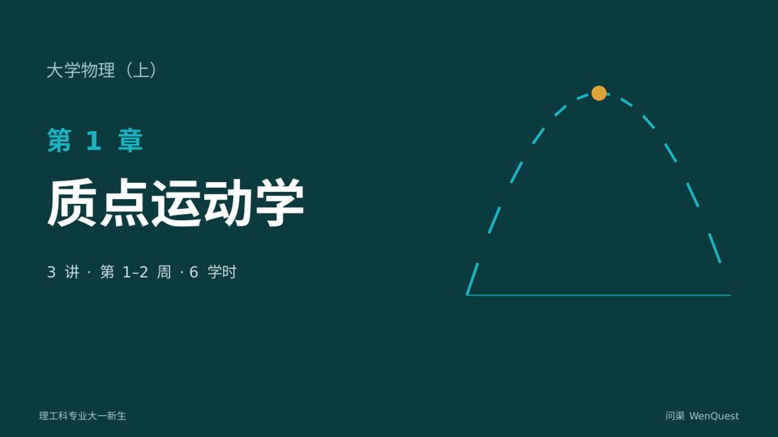

欢迎选修大学物理（上）王老师 · 10月9日 周五 09:00
同学们好！本学期我们用 16 周学习力学和热学，前 13 周是力学。第 1 章会复习并用上导数和积分，没有学过的同学不用担心，课上边用边讲。
每章有一次课堂测验和一次课后作业。第一次测验在 10月18日 周日 23:59 截止，请先读完 1.1–1.3 节再作答。
期末考试占总成绩 60%，平时的作业和测验是最好的准备。有问题随时在课程讨论区提出。
我要开一门大学物理（上），给理工科大一新生，每周 3 学时，上 16 周，重点讲力学，期末考试占 60%。
同学们好！本学期我们用 16 周学习力学和热学，前 13 周是力学。第 1 章会复习并用上导数和积分，没有学过的同学不用担心，课上边用边讲。
每章有一次课堂测验和一次课后作业。第一次测验在 10月18日 周日 23:59 截止，请先读完 1.1–1.3 节再作答。
期末考试占总成绩 60%，平时的作业和测验是最好的准备。有问题随时在课程讨论区提出。
| 项目 | 占比 |
|---|---|
| 期末考试 | 60% |
| 期中测验 | 15% |
| 课后作业 | 15% |
| 课堂测验 | 10% |
| 周 | 日期 | 内容 |
|---|---|---|
| 1 | 10/12–10/18 | 第 1 章 质点运动学 |
| 2 | 10/19–10/25 | 第 1 章 质点运动学 |
| 3 | 10/26–11/1 | 第 2 章 牛顿运动定律 |
| 4 | 11/2–11/8 | 第 2 章 牛顿运动定律 |
| 5 | 11/9–11/15 | 第 3 章 动量与角动量 |
| 6 | 11/16–11/22 | 第 4 章 功和能 |
| 7 | 11/23–11/29 | 第 4 章 功和能 |
| 8 | 11/30–12/6 | 第 5 章 刚体定轴转动 |
| 9 | 12/7–12/13 | 第 5 章 刚体定轴转动 期中测验（第 1–4 章），课堂 1 学时 |
| 10 | 12/14–12/20 | 第 6 章 机械振动 |
| 11 | 12/21–12/27 | 第 6 章 机械振动 |
| 12 | 12/28–1/3 | 第 7 章 机械波 |
| 13 | 1/4–1/10 | 第 7 章 机械波 |
| 14 | 1/11–1/17 | 第 8 章 气体动理论 |
| 15 | 1/18–1/24 | 第 9 章 热力学基础 |
| 16 | 1/25–1/31 | 总复习 总复习与答疑 |
| 周 | 日期 | 内容 |
|---|---|---|
| 1 | 10/12–10/18 | 第 1 章 质点运动学 |
| 2 | 10/19–10/25 | 第 1 章 质点运动学 |
| 3 | 10/26–11/1 | 第 2 章 牛顿运动定律 |
| 4 | 11/2–11/8 | 第 2 章 牛顿运动定律 |
| 5 | 11/9–11/15 | 第 3 章 动量与角动量 |
| 6 | 11/16–11/22 | 第 4 章 功和能 |
| 7 | 11/23–11/29 | 第 4 章 功和能 |
| 8 | 11/30–12/6 | 第 5 章 刚体定轴转动 |
| 9 | 12/7–12/13 | 第 5 章 刚体定轴转动 期中测验（第 1–4 章），课堂 1 学时 |
| 10 | 12/14–12/20 | 第 6 章 机械振动 |
| 11 | 12/21–12/27 | 第 6 章 机械振动 |
| 12 | 12/28–1/3 | 第 7 章 机械波 |
| 13 | 1/4–1/10 | 第 7 章 机械波 |
| 14 | 1/11–1/17 | 第 8 章 气体动理论 |
| 15 | 1/18–1/24 | 第 9 章 热力学基础 |
| 16 | 1/25–1/31 | 总复习 总复习与答疑 |
本单元是整门课的起点。我们用位置矢量、速度和加速度描述质点怎样运动，并第一次把导数和积分用到物理问题上：已知运动方程求速度和加速度，是求导；已知加速度和初始条件求运动，是积分。随后讨论圆周运动中的切向和法向加速度，最后用伽利略变换处理相对运动。后面的牛顿定律、动量和能量，都建立在这一单元的描述方法之上。
学完本单元，你将能够：
按顺序完成以下阅读：
1.1 描述质点运动的物理量本课讲义 · 约 5 分钟
1.2 圆周运动与自然坐标本课讲义 · 约 3 分钟
1.3 相对运动本课讲义 · 约 3 分钟
教材对应章节任选一本主流《大学物理》教材的“质点运动学”一章，作为讲义的补充。
按顺序学习以下各讲，点击标签切换。
以下资源帮助你更深入地理解本单元内容，不作要求，也不计入成绩。
PhET 抛体运动模拟 ↗
科罗拉多大学的交互模拟，可以改变初速度、角度和空气阻力，观察轨迹、射程和最高点，对照 1.1 节第 5 部分。
6 道计算题，覆盖运动方程求导与积分、抛体、圆周运动和渡河问题。手写后拍照或上传 PDF。
完成作业8 道选择和判断题，答完即可看到解析。
完成测验第 1 章讨论：加速度为零，速度一定为零吗？
参与讨论学完本单元，你将能够：
本单元将在第 3 周开放。
单元结构和学习目标已经确定。导读、讲义、作业和测验会在老师打开本单元或开课前一周由 AI 在后台生成。
现在生成本单元学完本单元，你将能够：
本单元将在第 5 周开放。
单元结构和学习目标已经确定。导读、讲义、作业和测验会在老师打开本单元或开课前一周由 AI 在后台生成。
现在生成本单元学完本单元，你将能够：
本单元将在第 6 周开放。
单元结构和学习目标已经确定。导读、讲义、作业和测验会在老师打开本单元或开课前一周由 AI 在后台生成。
现在生成本单元学完本单元，你将能够：
本单元将在第 8 周开放。
单元结构和学习目标已经确定。导读、讲义、作业和测验会在老师打开本单元或开课前一周由 AI 在后台生成。
现在生成本单元学完本单元，你将能够：
本单元将在第 10 周开放。
单元结构和学习目标已经确定。导读、讲义、作业和测验会在老师打开本单元或开课前一周由 AI 在后台生成。
现在生成本单元学完本单元，你将能够：
本单元将在第 12 周开放。
单元结构和学习目标已经确定。导读、讲义、作业和测验会在老师打开本单元或开课前一周由 AI 在后台生成。
现在生成本单元学完本单元，你将能够：
本单元将在第 14 周开放。
单元结构和学习目标已经确定。导读、讲义、作业和测验会在老师打开本单元或开课前一周由 AI 在后台生成。
现在生成本单元学完本单元，你将能够：
本单元将在第 15 周开放。
单元结构和学习目标已经确定。导读、讲义、作业和测验会在老师打开本单元或开课前一周由 AI 在后台生成。
现在生成本单元当物体的大小和形状对所研究的问题影响可以忽略时，把它看作只有质量的点，称为质点。描述运动必须先选参考系，再在参考系上建立坐标系。
从原点指向质点的矢量称为位置矢量：
$$\vec r(t)=x(t)\,\vec i+y(t)\,\vec j+z(t)\,\vec k$$
$\vec r(t)$ 就是运动方程。消去 $t$ 得到的 $x$、$y$ 关系称为轨迹方程。
$\Delta\vec r=\vec r(t+\Delta t)-\vec r(t)$ 是矢量；路程 $\Delta s$ 是轨迹长度，是标量。一般 $|\Delta\vec r|\le\Delta s$，只有单向直线运动时二者相等。
$$\vec v=\frac{d\vec r}{dt},\qquad \vec a=\frac{d\vec v}{dt}=\frac{d^2\vec r}{dt^2}$$
速率 $v=|\vec v|=\dfrac{ds}{dt}$。
运动学问题分两类：已知运动方程求速度、加速度（求导）；已知加速度和初始条件求速度、运动方程（积分）。
解：$x=2t$，$y=4-t^2$，消去 $t$ 得轨迹 $y=4-\dfrac{x^2}{4}$，是一条抛物线。
$\vec v=2\,\vec i-2t\,\vec j$，$t=1\,\text{s}$ 时 $\vec v=2\,\vec i-2\,\vec j$（m/s），速率 $2\sqrt2\approx2.83\,\text{m/s}$。
$\vec a=-2\,\vec j\ \text{m/s}^2$，为恒矢量。
解：$\dfrac{dv}{dt}=-kv$，分离变量积分得 $v=v_0e^{-kt}$。
再由 $\dfrac{dx}{dt}=v$ 积分，取 $x_0=0$：$x=\dfrac{v_0}{k}\left(1-e^{-kt}\right)$。
当 $t\to\infty$ 时 $x\to\dfrac{v_0}{k}$，即最多滑行 $v_0/k$。
水平方向匀速、竖直方向匀加速：
$$x=v_0\cos\theta\,t,\qquad y=v_0\sin\theta\,t-\tfrac12gt^2$$
射程 $R=\dfrac{v_0^2\sin2\theta}{g}$，$\theta=45^\circ$ 时最大；最大高度 $H=\dfrac{v_0^2\sin^2\theta}{2g}$。
角位置 $\theta$，角速度 $\omega=\dfrac{d\theta}{dt}$，角加速度 $\alpha=\dfrac{d\omega}{dt}$。
角量与线量的关系（半径 $R$）：
$$s=R\theta,\qquad v=R\omega$$
沿轨迹切向和法向分解：
$$a_t=\frac{dv}{dt}=R\alpha,\qquad a_n=\frac{v^2}{R}=R\omega^2,\qquad a=\sqrt{a_t^2+a_n^2}$$
切向加速度改变速度的大小，法向加速度改变速度的方向。匀速率圆周运动中 $a_t=0$，但 $a_n\neq0$。
解：$\omega=6t^2=6\,\text{rad/s}$，$\alpha=12t=12\,\text{rad/s}^2$。
$a_t=R\alpha=6\,\text{m/s}^2$，$a_n=R\omega^2=0.5\times36=18\,\text{m/s}^2$。
$a=\sqrt{6^2+18^2}=\sqrt{360}\approx18.97\,\text{m/s}^2$。
把圆周运动的结论推广：$a_n=\dfrac{v^2}{\rho}$，$\rho$ 为该点轨迹的曲率半径。
质点 A 相对参考系 C 的速度，等于 A 相对 B 的速度加上 B 相对 C 的速度：
$$\vec v_{AC}=\vec v_{AB}+\vec v_{BC}$$
加速度同理。这一关系在低速（远小于光速）下成立。
解：雨对车 = 雨对地 + 地对车。地对车的速度大小为 $10\,\text{m/s}$、方向向后，雨对地竖直向下，
$$\tan30^\circ=\frac{v_{\text{车}}}{v_{\text{雨}}}\ \Rightarrow\ v_{\text{雨}}=\frac{10}{\tan30^\circ}=10\sqrt3\approx17.3\,\text{m/s}$$
船对岸 = 船对水 + 水对岸。求最短时间时，船头垂直对岸；求最短路程时，让合速度垂直对岸（前提是船速大于水速）。
质点运动方程 $\vec r=t^2\,\vec i+2t\,\vec j$（SI）。求：(1) 轨迹方程；(2) $t=2\,\text{s}$ 时的速度和速率；(3) 加速度。
(1) $x=\dfrac{y^2}{4}$；(2) $\vec v=4\,\vec i+2\,\vec j$ m/s，速率 $\sqrt{20}\approx4.47$ m/s；(3) $\vec a=2\,\vec i$ m/s²（恒定）。
质点沿 $x$ 轴运动，$a=4-t$（SI），$t=0$ 时 $v=0$、$x=0$。求 $t=3\,\text{s}$ 时的速度和位置。
$v=4t-\dfrac{t^2}{2}$，$x=2t^2-\dfrac{t^3}{6}$；$t=3$ s 时 $v=7.5$ m/s，$x=13.5$ m。
以 $v_0=20\,\text{m/s}$、仰角 $30^\circ$ 抛出小球（$g=9.8\,\text{m/s}^2$，不计空气阻力）。求最大高度、飞行时间和射程。
$H=\dfrac{v_0^2\sin^2\theta}{2g}\approx5.10$ m；$T=\dfrac{2v_0\sin\theta}{g}\approx2.04$ s；$R=\dfrac{v_0^2\sin2\theta}{g}\approx35.3$ m。
质点沿半径 $R=2\,\text{m}$ 的圆周运动，路程 $s=2t+t^2$（SI）。求 $t=1\,\text{s}$ 时的速率、切向加速度、法向加速度和总加速度。
$v=2+2t=4$ m/s；$a_t=2$ m/s²；$a_n=\dfrac{v^2}{R}=8$ m/s²；$a=\sqrt{68}\approx8.25$ m/s²。
河宽 $100\,\text{m}$，水流速度 $3\,\text{m/s}$，船相对水的速度 $4\,\text{m/s}$。(1) 船头垂直对岸，过河要多久、被冲向下游多远？(2) 要到达正对岸，船头应朝哪个方向？过河要多久？
(1) $t=25$ s，下游 $75$ m；(2) 船头偏向上游，与河岸垂线夹角 $\varphi$ 满足 $\sin\varphi=\dfrac34$，$\varphi\approx48.6^\circ$；合速度 $\sqrt7\approx2.65$ m/s，$t\approx37.8$ s。
物体沿直线运动，加速度 $a=-kv^2$（$k>0$），初速度 $v_0$，$x_0=0$。求 $v(t)$、$x(t)$ 以及 $v$ 与 $x$ 的关系。
$v=\dfrac{v_0}{1+kv_0t}$；$x=\dfrac1k\ln(1+kv_0t)$；$v=v_0e^{-kx}$（由 $v\dfrac{dv}{dx}=-kv^2$ 积分）。
1质点在 Δt 时间内的位移大小 |Δr| 与路程 Δs 的关系，一般情况下是
位移是起点到终点的直线距离，路程是轨迹长度；只有单向直线运动时二者相等。
2运动方程 r = 2t i + (4 − t²) j（SI），t = 1 s 时质点的速率为
v = 2i − 2t j，t = 1 s 时 v = 2i − 2j，速率为 √(4+4) = 2√2 m/s。
3质点做匀速率圆周运动时
速率不变故切向加速度为零；速度方向不断改变，所以法向加速度 v²/R 不为零。
4斜抛运动的物体到达最高点时（不计空气阻力）
最高点竖直分速度为零，只剩水平分速度；加速度始终是 g，竖直向下。
5质点沿半径 0.5 m 的圆周运动，θ = 2t³（rad），t = 1 s 时的法向加速度为
ω = 6t² = 6 rad/s，a_n = Rω² = 0.5 × 36 = 18 m/s²。
6汽车以 10 m/s 行驶，雨滴在车窗上的痕迹与竖直方向成 30°，雨滴相对地面竖直下落，则雨滴对地速度约为
tan30° = 10 / v雨，v雨 = 10√3 ≈ 17.3 m/s。
7直线运动中 a = −kv（k > 0），初速度为 v₀，则速度随时间的变化为
dv/dt = −kv，分离变量积分得 ln(v/v₀) = −kt。
8判断：某时刻质点的加速度为零，则该时刻它的速度一定为零。
加速度描述速度的变化率。匀速直线运动中加速度为零，速度却不为零。
已答 0 / 8
| 项目 | 截止 | 得分 |
|---|---|---|
| 第 1 章 课堂测验 | 10月18日 周日 | – / 8 |
| 作业 1：质点运动学 | 10月25日 周日 | – / 10 |
| 第 2 章 课堂测验 | 11月1日 周日 | – / 8 |
| 作业 2：牛顿运动定律 | 11月8日 周日 | – / 10 |
| 第 3 章 课堂测验 | 11月15日 周日 | – / 8 |
| 作业 3：动量与角动量 | 11月15日 周日 | – / 10 |

本章课件由问渠根据课程结构自动生成，讲稿见各页备注。
试卷在考试开始时开放。复习范围：第 1–4 章，题型为选择、填空和计算。
以下为 AI 生成的试卷、参考答案和评分标准，所有数值已验算。老师可以替换任意一题，或让 AI 按同样的知识点重新出一套 B 卷。
质点作曲线运动时，下列说法正确的是
质量为 m 的物体静止在倾角为 θ 的粗糙斜面上，动摩擦因数为 μ，物体受到的摩擦力大小为
质量 2 kg 的物体从静止开始，受沿 x 轴的力 F = 4t（SI）作用，t = 2 s 时的速度大小为
保守力所做的功
质点系动量守恒的条件是
质点运动方程 r = 3t² i + 2t j（SI），其加速度 a = ______。
质点沿半径 R = 1 m 的圆周运动，路程 s = t³（SI），t = 1 s 时法向加速度 aₙ = ______。
质量 0.5 kg 的小球以 10 m/s 垂直撞墙，以 8 m/s 反弹，墙对小球的冲量大小为 ______。
劲度系数 k = 200 N/m 的弹簧被压缩 0.1 m，弹性势能为 ______。
质量为 m 的质点以速率 v 作半径为 r 的匀速圆周运动，对圆心的角动量大小为 ______。
质点沿 x 轴运动，a = 6t（SI），t = 0 时 v₀ = 2 m/s，x₀ = 0。求 t = 2 s 时的速度和位置。
质量 m₁ = 3 kg 的物体放在光滑水平桌面上，通过跨过定滑轮的轻绳与悬挂的 m₂ = 2 kg 物体相连，不计滑轮质量和摩擦，g = 9.8 m/s²。求加速度和绳的张力。
质量 m = 0.01 kg 的子弹以 v₀ = 400 m/s 水平射入静止在光滑水平面上的木块（M = 0.99 kg）并留在其中，木块随后压缩劲度系数 k = 200 N/m 的轻弹簧。求：(1) 子弹射入后的共同速度；(2) 碰撞中损失的机械能；(3) 弹簧的最大压缩量。
质量 m = 2 kg 的物体从高 h = 5 m 的光滑曲面顶端由静止滑下，进入动摩擦因数 μ = 0.25 的水平面，g = 9.8 m/s²。求：(1) 到达底端时的速率；(2) 在水平面上滑行多远停下；(3) 摩擦力做的功。
期末考试覆盖全部 9 章，考前一周公布复习要点。
期末试卷在第 15 周由 AI 按下面的组卷蓝图从本课题库抽题生成，同时出 A、B 两套卷。
| 题型 | 题数 | 每题 | 小计 |
|---|---|---|---|
| 单项选择题 | 10 | 3 | 30 |
| 填空题 | 10 | 2 | 20 |
| 计算题 | 5 | 10 | 50 |
| 内容范围 | 分值占比 |
|---|---|
| 质点运动学、牛顿定律（第 1–2 章） | 20% |
| 动量、角动量、功和能（第 3–4 章） | 25% |
| 刚体定轴转动（第 5 章） | 15% |
| 振动与波（第 6–7 章） | 20% |
| 气体动理论、热力学（第 8–9 章） | 20% |
难度分布：基础 60%、中等 30%、较难 10%。
测验第 8 题说“加速度为零时速度一定为零”是错的。请再举一个相反的例子：某一时刻速度为零，加速度却不为零。说明它出现在什么场景，并用本章的公式解释。回复至少一位同学，指出他的例子里加速度的方向。
AI 助教会在截止后汇总全班回复中的常见误解，供老师下次课讲评。